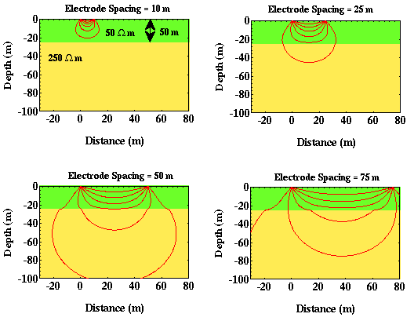
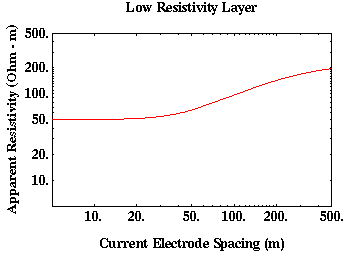

A Second Example of Current Flow in Layered Media
As another example of current flow in layered media and how apparent resistivity can vary with varying electrode spacing*, consider the earth model shown below. In this case, a low resistivity layer overlies a higher resistivity halfspace.

Initially with the current electrodes closely spaced, most of the current is confined to the upper layer along paths that are very close to those that they would have assumed if the model were homogeneous. The computed apparent resistivity is very close to the resistivity of the upper layer, 50 ohm-m.
At larger current electrode spacings, more current flows to greater depths. Between the two current electrodes, where the potential electrodes are located, the current flow lines become significantly distorted by the presence of the higher-resistivity layer located at depth. Therefore, around the potential electrodes the current density is larger than we would have observed in a homogeneous Earth. This relative increase in current density will cause our computed value of apparent resistivity to increase from 50 ohm-m.
At very large current electrode spacings, current flow around our potential electrodes again approximates that which we would observe in a homogeneous Earth. In this case, however, because most of the current is flowing through the lower media in the vicinity of the potential electrodes, the computed resistivity we be close to 250 ohm-m. Thus, as current electrode spacing is increased, the apparent resistivity will increase, eventually approaching 250 ohm-m. A plot of apparent resistivity versus current electrode spacing is shown below.

Because current would prefer to flow within the first layer, notice that the apparent resistivity approaches the resistivity of the halfspace more slowly (i.e., with greater electrode spacings) than was found in the previous case.
*Although we have not explicitly said this, the relevant spacing in the phrase electrode spacing is not the spacing between the current electrodes or the spacing between the potential electrodes but rather the spacing between the current and the potential electrodes. Thus, even if our current electrode spacing is large (so that most or our current is flowing through the lower medium), if our potential electrodes are close to the current electrodes, we will compute apparent resistivities that are more like the resistivity of the upper layer than that of the lower layer. In the previous example as well as in this example, we have explicitly assumed that the positions of the potential electrodes remain fixed throughout the experiment so that the distance between the potential and the current electrodes increases as the distance between the current electrodes increases. As the distance between current and potential electrodes increases, the depth over which we average resistivity structure in computing an apparent resisitivity also increases.
Resistivity
- Current Flow and Ohm's Law pg 4
- The Fund. Electrical Property is Resistivity, NOT Resistance pg 5
- Resistivities for Common Earth Materialspg 6
- Current Density and Electric Fieldpg 7
- A First Estimate of Resistivitypg 8
- Current Flow From Two Closely Spaced Electrodespg 9
- A Practical Way of Measuring Resistivity pg 10
- Sources of Noise pg 11
- Depth of Current Penetration V.S. Current ElectrodeSpacing pg 12
- Current Flow in Layered Media pg 13
- Variation in Apparent Resistivity: Layered Versus Homogeneous Media pg 14
- Current Flow in Layered Media Versus Electrode Spacing pg 15
- A Second Example of Current Flow in Layered Mediapg 16